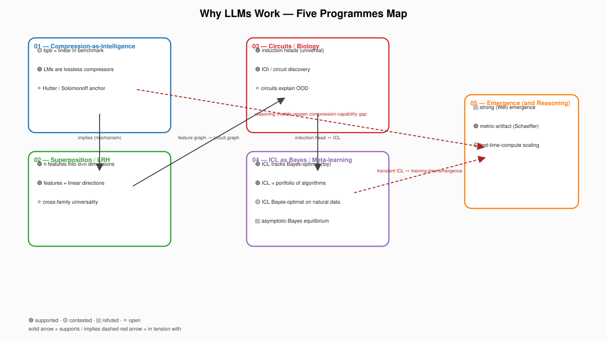

The Five Programmes Map
An opinionated, falsification-anchored atlas of the five research programmes that try to answer that question. Every claim carries an epistemic status. Every status change requires a cited paper.
status snapshot
Counts auto-updated from programmes/* via
scripts/extract_ledger_json.py.
The existing awesome-* lists in interpretability and LLM theory are
flat directories of papers. They link to good work, but they do not tell you
which claims are alive, which are dead, and which are still being fought over.
They treat the field as a settled science rather than as a young one with sharply
contested foundations.
This repo treats why do LLMs work? as five competing research programmes in the Lakatosian sense. Each programme has a hard core (a falsifiable central claim), a protective belt (auxiliary hypotheses that absorb local refutations), and an evidence ledger. Every tracked claim has a status — 🟢 supported, 🟡 contested, 🔴 refuted, ⚪ open — and a falsifier.
Each card links to the full programme file in the repo.
Programmes, key claims with status, and the supports / tension relations
between programmes. Rendered from
scripts/render_taxonomy.py.

All 41 tracked claims, filterable by programme and status. The page is the audit trail of what the field actually believes right now.
See n features packed into d<n dimensions as a function of sparsity — the Elhage-et-al-2022 toy model, interactive in your browser, no install.
Five teaching notebooks — one per programme — that each run in under 5 min on a free Colab T4 and end with an explicit "what this does not show."